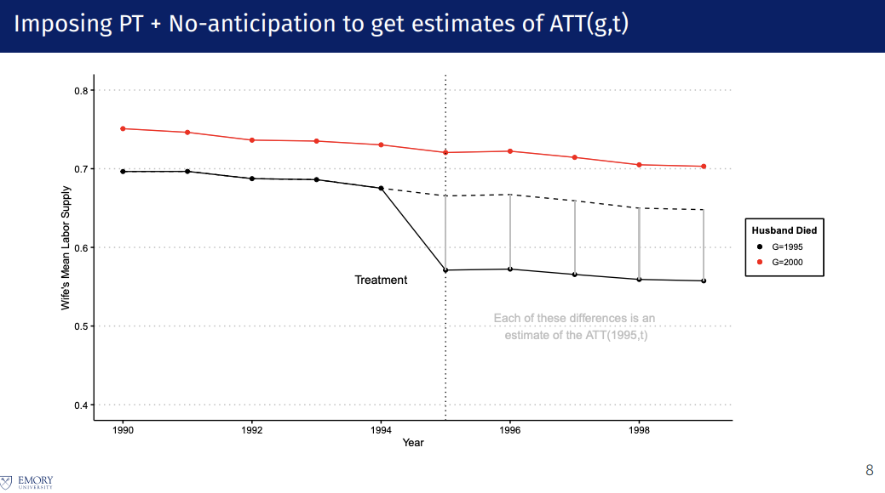
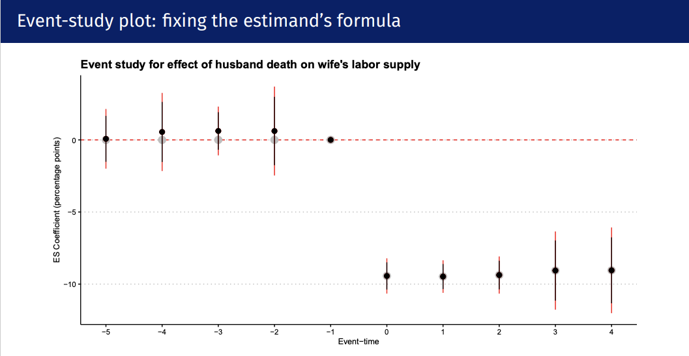

Event Study-1：DID学习
该系列为学习Event Study的研究思想、方法、量化例子。 本文为DID的学习帖子，包括：研究问题描述、Intuition、双向固定效益模型、平行趋势检验、Robustness检验等。
1. 解决的问题与方法的 Intuition¶
核心目标： 因果推断 (Causal Inference)。在一项政策或事件发生后，剥离出“纯粹由该事件带来的净影响”，解决“反事实 (Counterfactual)”无法观测的问题。
Note
- 以政策实施为例，我们希望回到一个这样的问题：
- 城市A颁布一个新的政策后，到底是否为城市带来了正向的帮助？
- 最理想的情况下：我们能够在
平行宇宙中发现，城市A没颁布政策的样子- 很可惜，
平行宇宙暂时无法观测到(我去不早说！)
- 很可惜，
- 退而求其次：如果存在一个城市B，它满足这样的条件
- 没有颁布政策
- 城市B和城市A是“平行的”，它们各自发展差不多
- 我们称
- 城市A:实验组（Treatment Group）
- 城市B：对照组（Control Group）
直觉：做两次减法。 上文的例子，我们其实有两个维度：是否为对照组、是否在政策颁布时间前后。 - 第一次差分（时间维度）： 实验组政策后 - 政策前。 * - 缺陷： 包含了政策效应 + 市场随时间自然波动的趋势。 - 第二次差分（截面维度）： 减去对照组在同一时间段前后变化。 - 结果： 剔除了自然时间趋势，剩下的就是纯粹的因果效应。
实验前提条件：平行趋势假设 (Parallel Trends Assumption) 如果没有政策冲击，实验组和对照组的 \(Y\) 值走势必须是平行的。对照组的变化完美模拟了实验组的“反事实”走势。
2. 基础 2x2 回归模型及细节¶
变量解释： - \(Treat_i\): 组别虚拟变量。实验组=1，对照组=0。控制了不随时间变化的组间天生差异。
- \(Post_t\): 时间虚拟变量。政策后=1，政策前=0。控制了随时间变化的共同宏观趋势。
- \(Treat_i \times Post_t\): 交互项。仅当“实验组”且处于“政策后”时才为 1。
- \(\beta_3\): 核心关注的因果估计量（DID Estimator）。
局限性： 颗粒度太粗，只能按“组别”和“前后大阶段”划分，无法控制个体层面的特定异质性和精细的年度波动。我们只划分了4个group，每个group中样本的异质性还是很强。后续的Two-way Fixed Effects中会解决这个问题。
3. 核心推导：为什么 \(\beta_3\) 就是 DID？¶
在 2x2 经典设定下（两组别：实验组/对照组；两时期：政策前/政策后），通过期望值矩阵可以清晰看到系数是如何被“减”出来的：
| 组别 | 政策前 (\(Post=0\)) | 政策后 (\(Post=1\)) | 前后差异 (1st Diff) |
|---|---|---|---|
| 对照组 (\(Treat=0\)) | \(\beta_0\) | \(\beta_0 + \beta_2\) | \(\beta_2\) (纯时间趋势) |
| 实验组 (\(Treat=1\)) | \(\beta_0 + \beta_1\) | \(\beta_0 + \beta_1 + \beta_2 + \beta_3\) | \(\beta_2 + \beta_3\) |
| 组间差 (2nd Diff) | \(\beta_1\) (天生固有的组间差距) | \(\beta_1 + \beta_3\) | \(\beta_3\) (纯净的 DID 效应) |
通过两次相减，常数项 \(\beta_0\)、固有差异 \(\beta_1\) 和共同时间趋势 \(\beta_2\) 全部抵消，只剩 \(\beta_3\)。
4. TWFE (双向固定效应) 回归模型及细节¶
实际量化实证中最常用的基础模型（Baseline Model），将粗糙的组别分类升级为精确到个体和时间节点的控制。
变量解释与改进： - \(\alpha_i\) (个体固定效应)： 替代了 \(Treat_i\)。它本质上是给每个个体（如每只股票）分配一个独立的虚拟变量，吸收了该个体所有不随时间变化的固有特征（如企业注册地、上市年份）。 - \(\lambda_t\) (时间固定效应)： 替代了 \(Post_t\)。本质上是给每个时间点（如每个交易日/年份）分配一个独立虚拟变量，吸收了该时间点所有个体共同面对的宏观冲击（如系统性牛熊市）。 - \(D_{it}\) (政策指示变量)： 本质是动态交互项。当个体 \(i\) 在 \(t\) 时刻处于政策实施状态时为 1，否则为 0。 - \(\delta\): 最终估计出的平均因果效应。
逻辑： 剩下的异常波动归因于政策 \(D_{it}\)。
Note
上文TWFE模型形式为简写，下面给出了详细的形式
模型详细的形式： \(\(Y_{it} = \beta_0 + \underbrace{\sum_{j=1}^{N-1} \eta_j \cdot \text{Ind\_Dummy}_{ij}}_{\text{个体固定效应 } \alpha_i} + \underbrace{\sum_{s=1}^{T-1} \tau_s \cdot \text{Time\_Dummy}_{ts}}_{\text{时间固定效应 } \lambda_t} + \delta D_{it} + X_{it}'\gamma + \epsilon_{it}\)\)
公式细节拆解：
- \(\beta_0\) (全局常数项)：回归的基准截距。
- \(\alpha_i = \sum_{j=1}^{N-1} \eta_j \cdot \text{Ind\_Dummy}_{ij}\) (个体层面的展开)：假设有 \(N\) 个观测个体（如股票/城市），统计模型在后台实际上生成了 \(N-1\) 个专属虚拟变量（扣除 1 个作为基准组以防止完全多重共线性，即 Dummy Trap）。\(\eta_j\) 强行吸收了这类样本固有特征。
- \(\lambda_t = \sum_{s=1}^{T-1} \tau_s \cdot \text{Time\_Dummy}_{ts}\) (时间层面的展开)：也就是 \(\lambda_t\) 的真实面目。假设数据跨越 \(T\) 个时间周期，系统在后台生成 \(T-1\) 个时间虚拟变量。\(\tau_s\) 吸收了第 \(s\) 期“所有个体共同面对”的宏观系统性冲击。
- \(\delta D_{it}\)： 核心的政策指示动态交互项，相当于上文的\(\beta_3\)
- \(X_{it}'\gamma\)：控制变量
5. 从 TWFE 到 Event Study：动态效应与平行趋势检验¶
普通 TWFE 只能给出一个事后的“平均数”，且无法自证因果前提（事前平行）。Event Study 将 \(D_{it}\) 细化为时间序列逐步的动态过程，是 DID 的灵魂所在。
模型细节： * \(D_{i, t+k}\) (相对时间哑变量)： 表示观测时刻 \(t\) 距离个体 \(i\) 受到政策冲击时刻的距离为 \(k\) 年。 * \(k < 0\): 政策实施前（用于检验平行趋势）。 * \(k \ge 0\): 政策实施后（用于观察动态效应）。 * 基准期 (Reference Period)： 必须剔除一期（通常选政策前一期，即 \(k = -1\)）作为比较基准，防止完全多重共线性。所有的 \(\beta_k\) 都是相对于 \(k=-1\) 时刻的差异。
6. 回归检验结果与读图指南¶
Event Study 的结果必须通过图表展示（动态效应图）。
最最简单的！ 我们可以直接画趋势图，看事件前是否平行，获取基本的判断：

当你的时间点变多、截面样本变多，肉眼难以观察时，可以观察系数的渐进变化：

看置信区间是否跨过 0 轴- 事前看平行 ( \(k < 0\) )： 系数点必须在 0 附近波动，且 95% 置信区间必须包含 0。这意味着政策前两组无显著差异，平行趋势假设成立。如果显著偏离 0，说明存在预期效应或本身趋势不同（因果推断翻车）。
- 基准点 ( \(k = -1\) )： 通常落在 0 上且没有置信区间。
- 事后看显著 ( \(k \ge 0\) )： 置信区间不包含 0，说明政策产生了显著的因果影响。 - 若系数持续增大，说明有累积/放大效应 - 若逐渐回归 0，说明仅为短期冲击
7. Robustness Check 稳健性检验¶
为了证明结论不是统计上的偶然或被其他因素干扰
最重要的方法：安慰剂检验 (Placebo Test) * 操作： 随机打乱样本的“政策实施时间”或“受理组别”，伪造出“假政策”，重复进行 500-1000 次回归。 * 读图： 这上千个假回归的估计系数分布应服从均值为 0 的正态分布（钟形曲线）。真实的估计值（红线）应作为极大/极小的异常值（Outlier）远远偏离该分布。如果真系数混在假系数堆里，说明原结果是数据噪音凑出来的。
其他常规稳健性检验： * 更换时间窗口： 缩短或拉长考察期。 * 样本截断/缩尾： 剔除极端值样本（如微盘股、停牌重组股）。 * 控制同期其他冲击： 排除研究窗口期内其他相关政策的干扰。
8. 其他核心细节¶
8.1 异质性分析 (Heterogeneity)¶
不要止步于平均效应，进一步研究：事件对谁的作用更强 * 操作方法： 分样本回归（Split Sample）或引入三重交互项（DDD）。 * 例如： 按照市值大小分维，发现取消 T+0 机制对小市值股票的流动性打击远大于大市值股票；按信息透明度分类，发现卖空机制的引入对信息不对称严重的公司定价纠偏作用更强。
8.2 控制变量 Control Variables 细节：Bad Controls¶
- 好控制变量：
- 影响 \(Y\) 且影响受政策概率的变量，但必须是政策发生前（事前就存在的、不受政策本身影响的变量。
- 坏控制变量 (Bad Controls)：
- 在政策实施后，本身会被政策改变的中间变量。
- 致命后果： 控制中间变量会切断真实的因果传导路径，导致严重的内生性（选择偏误）和估计量缩水。
- 例如： 研究“降低印花税（政策）对市场波动率（Y）的影响”时，绝不能把“交易量”作为控制变量。因为印花税下降本身就会放大交易量，交易量是传导路径的一部分，将其控制住，就看不清政策的真实全貌了。通常，依赖双向固定效应 \(\alpha_i\) 和 \(\lambda_t\) 比盲目堆砌控制变量更严谨。
- 在政策实施后，本身会被政策改变的中间变量。
实际操作中：
可以做一个时变控制变量 (Time-varying controls) 的敏感性测试： 跑一次不加控制变量的。跑一次加了控制变量的。 理想结果： 两个系数 \(\delta\) 应该差不多。如果加了 CV 后系数突然消失了，说明你的因果关系可能全是靠这些 CV 撑起来的，或者你引入了 Bad Control。
8.3 聚类标准误 Clustered Standard Errors¶
由于同一个体（如同一只股票）在不同时间点的残差往往高度自相关。如果假设它们是独立的，会严重低估标准误，导致 P 值虚假显著
Note
- 恭喜！我学了DID的1%的知识！
- 进一步的深入学习，推荐一个Emory老师的课件和文章，我的图片也是来自于他的课件。
- 事实上，量化研究的Event Study时，我们更多会用Abnormal Return去研究，也会设计一些指标，下一篇写Abnormal Return，再下一篇写经典的案例吧。